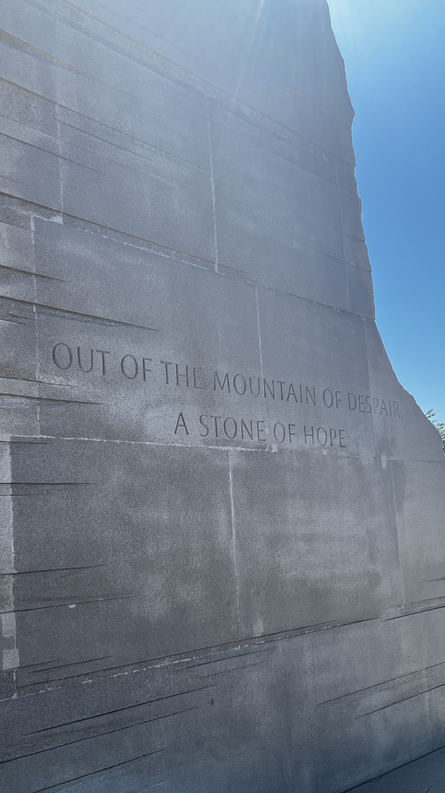

— draft for review · replace photo-placeholder with actual MLK Memorial image —
Reality-altering technology as terrain in the long struggle over collective consciousness

The Martin Luther King Jr. Memorial, Washington D.C. — a figure emerging from the Stone of Hope.
The battles that determine the shape of history are no longer won or lost on terrain that can be seized by armies or captured by political machinery. The Chinese Civil War, the New Deal, the Civil Rights Movement — these transformations were military and political accomplishments, yes, but each was made possible by something that preceded and outlasted its tactical victories: the accumulated will of masses of people whose historical moment had already prepared them for transformation.
Mao did not impose revolution on China. A century of dispossession and humiliation had already generated the energy. Roosevelt did not invent solidarity — he found it in the wreckage of a system that had exposed its own contradictions. King did not conjure the will of Black Americans — he gave form and direction to what millions were already living in their bodies and their daily indignities. These were not great men acting alone. These were ideas whose time had come, emerging from the Zeitgeist of the people's will.
What this article addresses is not primarily a technical question. It is this: what generates and sustains that will — not for a moment, not for a campaign, but over the long arc of time required for genuine transformation? And what does the answer mean for those working today in the medium that may be the most consequential tool for shaping collective consciousness since the printing press?
The battlefield has always been consciousness. The weapons have always been myth, imagination, and the stories people tell about who they are and what is possible. What is new is that the tools for operating on that terrain — Augmented Reality, Virtual Reality, Extended Reality, AI-assisted immersive experience — are now being developed and deployed at civilizational scale, and by McLuhan's own analysis of how media work, these emergent technologies are not merely new additions to the communicative arsenal. They are inclusive of every prior form of media — which means they concentrate the war of myth into a single terrain for the first time in human history.
In Laws of Media — the book Marshall McLuhan spent the last decade of his life developing, completed posthumously with his son Eric — McLuhan proposed that any medium, technology, or human artifact simultaneously performs four operations.1 These are not stages. They act at once, in tension, the moment a medium enters a cultural field:
What the medium amplifies and intensifies. In the domain of collective will: the inhabitable proof that another world is not merely imaginable but livable.
What the medium displaces. In the domain of collective will: the distanced spectatorship that converts pain into information and preserves the observer from being claimed by what they witness.
What the medium brings back from prior obsolescence. In the domain of collective will: the embodied, communal, place-based knowing of oral and Indigenous cultures — belonging constituted through shared presence, not shared representation.
What the medium becomes when pushed to its limit. In the domain of collective will: the gap between declared values and actual conduct stops being a vulnerability of power and becomes a tool of power — engineered, administered, enclosed.
These are not two separate frameworks in dialogue. The tetrad is a grammar of media effects. The four sources are that grammar's conjugation in the domain of collective transformation. They describe the same underlying dynamics: what gets amplified, what gets displaced, what gets recovered, and what happens when the process exceeds its own limits. The argument in this article has been enacting this structure all along. Naming it makes the practical consequences legible for those who build in these technologies.
The Horizon Figure — the tetrad's enhancement operation — is not a utopian projection. It is an actually existing demonstration that the declared impossibility of alternatives is false. Every sustained movement carries someone, living or dead, real or mythologized, who already inhabits the future in the imagination of the people. King was that figure for millions, and the stone emerging from the granite on the National Mall continues to do that work decades after his death. The horizon figure is not a leader in the managerial sense. They are proof of possibility — evidence, inscribed in the imagination, that the future being struggled toward is real. Their existence as image does work that their existence as person cannot fully accomplish.
Named Suffering — the tetrad's obsolescence operation — is the act that converts private pain into political fact. Suffering can be named and still held at a distance, catalogued and filed. What transforms it is the obsolescence of the spectator position: the medium that sustains collective will must push aside the screen that allows one to know about suffering without being claimed by it. The Birmingham fire hoses did more to generate will in the American North than any speech, because they made the contradiction undeniable — they removed the distance that print had always preserved between observer and condition.
Witnessed Belonging — the tetrad's retrieval operation — is the embodied, communal, place-based knowing that oral and Indigenous cultures never lost and that literate cultures structurally displaced. You cannot sustain will alone. You sustain it in the presence of others who confirm your reality. This is why music, ritual, and congregation were not logistically convenient additions to the Civil Rights Movement but ontologically necessary components of it. The church was not a meeting venue. It was the infrastructure of collective consciousness — the space where private experience became shared myth. What gets retrieved, in a medium that operates in this mode, is exactly this: knowledge held in bodies and places and the co-presence of people who are not consuming a representation but participating in an event.
The Living Contradiction — the tetrad's reversal operation — is the gap between what a society claims to be and what it demonstrably is. This gap is not a flaw in the system. It is the system's structural vulnerability. Every major transformative movement has named it, displayed it, and forced the confrontation that could not be resolved without structural change. But the reversal operation in the tetrad identifies what happens when the medium is pushed past its limit: the contradiction stops being organic and becomes administered. The medium that can manufacture belonging can also manufacture the appearance of contradiction — producing managed dissent, designed frustration, and enclosed discontent that channels collective energy away from structural change and into platform engagement.
McLuhan argued in Understanding Media and The Gutenberg Galaxy that print technology had created what he called "typographic man" — a particular form of consciousness characterized by linear, sequential thinking, visual bias, individualism, and the assumption of objective, neutral observation.2 This was not human consciousness as such. It was a specific historical formation that print technology made dominant in Western culture.
Electronic media, McLuhan argued, was already undoing this formation. Television, radio, and telephone were creating "acoustic space" — simultaneous, multi-sensory, participatory awareness that more closely resembled pre-literate oral cultures than the detached, sequential consciousness of the print era.3 What looked like cultural breakdown from the perspective of typographic consciousness was actually a transformation to a different mode of awareness — one that many non-Western cultures had maintained all along.
Walter Ong, developing McLuhan's framework in Orality and Literacy, documented the cognitive characteristics of primary oral cultures that print displaced: additive rather than subordinate, aggregative rather than analytic, close to the human lifeworld, empathetic and participatory, situational rather than abstract — and above all, embodied.4 "For an oral culture," Ong observed, "learning or knowing means achieving close, empathetic, communal identification with the known."5 This is precisely what the four sources of collective will require. And it is precisely what print culture structurally prevented by widening, to a civilizational scale, the distance between the knower and the known.
The fragmentation of shared understanding that the past decade of social networks and generative AI has accelerated may not primarily be a crisis of information quality or platform design. It may be a crisis of hegemony: the declining ability of one particular consciousness-form — print-shaped, Western, categorical — to present itself as universal. The algorithms we blame for fragmentation may be better understood as infrastructure through which multiple, previously suppressed ways of knowing are asserting themselves. This matters for AR/VR/XR practitioners because it means the question is not how to restore the old common ground. That ground was never as common as its beneficiaries believed. The question is how to build tools adequate to a mode of collective consciousness that print culture taught us to dismiss as primitive or irrational.
The four sources of collective will require a medium that can hold simultaneity, embody contradiction, witness suffering without abstracting it, and inscribe the horizon figure in a way that can be inhabited rather than merely observed. Print — the medium that shaped Western consciousness for five centuries — handles each of these dimensions poorly.
Consider what happens when you try to write down a dream. You must impose linear sequence on what was simultaneous. You must choose a single perspective when the dream may have involved multiple viewpoints. You must translate sensory, emotional, and spatial experience into words, creating logical connections between elements that existed through association rather than causality. The dream in its experienced form operated across sensory, emotional, symbolic, spatial, and temporal registers simultaneously. Writing collapses all of that into a single sequential stream.
This limitation becomes most visible when Western anthropology has attempted to translate Aboriginal Australian cosmology. The concept rendered in English as "Dreamtime" offers a precise case study in how print-based categorical thinking distorts knowledge systems organized through different principles. Dean's comprehensive study documents that there is "a wide range of variation amongst Aboriginal communities and anthropologists, in the way they conceptualise the 'dreamtime'" — variation that print's demand for universality systematically suppresses.6 The term "Dreamtime" itself emerged from what scholars now recognize as a mistranslation that reduced "an entire epistemology to a single English word."7 More recent scholarship suggests the concept is better understood as "everywhen" — not past, present, or future, but a temporal multiplicity that linear narrative cannot accommodate.8
What is significant here is that Aboriginal ontologies present the world as "one reality composed of an inseparable weave of secular and sacred dimensions" — not separate categories requiring bridges, but an integrated whole.9 The knowledge is fundamentally place-based, experiential, and multidimensional. Jeannie Herbert Nungarrayi, describing the Warlpiri concept of Jukurrpa, emphasizes that "The Dreaming is not something that has been consigned to the past but is a lived daily reality" that "provides for a total, integrated way of life."10 This is the mode of knowing — embodied, simultaneous, place-based, communal — that the tetrad's retrieval operation names. It is what print displaced. And it is what the inclusive medium is now positioned to recover.
"The 'content' of any medium is always another medium," McLuhan writes at the opening of Understanding Media. "The content of writing is speech, just as the written word is the content of print, and print is the content of the telegraph."11 This is not a metaphor. It is a structural description of how media nest inside each other. Each new medium takes up the prior medium as its content, inheriting and transforming its effects in the process.
AR/VR/XR extends this nesting to its logical terminus. The immersive medium is not the most recent step in a long chain of remediations. It is the first medium that simultaneously contains the entire chain as nested, active, co-present layers:
Every one of these media persists inside AR/VR/XR — not as historical residue but as active layer. A user in an immersive environment simultaneously encounters gesture (avatar body language and hand tracking), speech (spatial audio), image (rendered environments), text (interface elements and annotations), film (integrated video), and networked information (real-time data feeds). The immersive medium does not present these as options. It contains them as simultaneous, integrated, co-present dimensions of a single experience.
Bolter and Grusin's Remediation identified media nesting as a defining characteristic of digital media generally, building explicitly on McLuhan's principle.12 Their analysis of VR as the extreme case of the logic of immediacy — the medium that most aggressively pursues its own disappearance, that strives to become transparent — is correct as far as it goes. But they describe VR as the most recent remediation in a dyadic chain, not as the inclusive medium that contains the entire chain simultaneously. That distinction matters for the tetrad analysis. The immersive medium does not merely remediate film or television. It simultaneously operates the enhancement, obsolescence, retrieval, and reversal of every prior medium at once, with the combined force of all their effects.
Wagner saw this potential a century and a half before the technology existed to realize it. His Gesamtkunstwerk — the total artwork proposed in The Artwork of the Future — sought to reunite the arts fragmented since Greek tragedy: music, poetry, dance, drama, visual design, all addressing the whole person simultaneously.13 Packer and Jordan trace the lineage from Wagner through the Futurists, early VR pioneers like Morton Heilig and Ivan Sutherland, to digital multimedia as the progressive realization of this impulse.14 Brecht, confronting Wagner's model, identified its political danger: total synthesis eliminates the critical distance that allows an audience to think rather than merely feel. "When art and politics fuse," Brecht warned, the total artwork can function as hypnosis — immersion without exit, experience without reflection.15 The reversal operation in the tetrad is Brecht's warning restated in McLuhan's grammar.
Because AR/VR/XR contains every prior medium simultaneously, its tetrad operations run at the combined intensity of the entire stack. This is not a quantitative difference from prior media. It is qualitative. The inclusive medium enhances the Horizon Figure with the full affordances of gesture, speech, image, narrative, film, and networked information operating together. It obsolesces the spectator position not merely for one sense channel, as radio or photography did, but across the full sensorium simultaneously. It retrieves embodied belonging not as a pale echo of oral culture's secondary characteristics, but as fully spatial, proprioceptive, multi-sensory presence. And when it reverses — when it is pushed past its limits by concentrated ownership — it does so with the combined persuasive and controlling capacity of every prior medium's arsenal.
Mel Slater's research on Place Illusion establishes that this is not a speculative claim about future technology. Present-generation VR already produces pre-cognitive effects that operate below the threshold of conscious evaluation: participants flinch from virtual precipices they know are not real, respond to virtual social actors with genuine physiological arousal, and in some documented cases physically flee a room to escape a virtual fire.16 The illusion operates at the level of perception before reflection can intervene. Kilteni, Groten, and Slater's Sense of Embodiment framework — self-location, agency, and body ownership in virtual space — formalizes what this means: the immersive medium does not present an alternative world. It constitutes one, with a body inside it that registers it as actual.17
Lisa Messeri's ethnographic work makes the practical consequence precise. The operative function of immersive media is place-making, not image-making.18 The medium does not transmit information about a place. It constitutes a place. When that place is an inhabitable demonstration of an alternative way of living, the enhancement function directly amplifies the Horizon Figure's power to sustain collective will with a force unavailable to any prior medium.
But Messeri's work also documents the reversal already visible in the medium. VR promises to knit fractured realities into shared experience, but this promise contains its own capture mechanism: "dreams of empathy collide with reality's irreducibility." Lisa Nakamura's analysis of virtuous VR names what reversal looks like in practice: VR experiences designed to generate racial empathy automate the feeling of moral concern without the structural commitment that moral concern demands.19 "Just as algorithms automate inequality," Nakamura writes, "'anti-racist' documentary VR automates empathy." The user cries. The structural conditions that produced the suffering remain untouched. What enhanced the Horizon Figure — the power to inhabit another world — reverses, when captured by commercial and institutional interests, into empathy tourism.
Ruha Benjamin extends this into systematic form: technologies that present themselves as neutral or progressive reproduce the hierarchies of their creators through what she calls the New Jim Code — engineered inequity operating at the speed and apparent objectivity of automation.20 Nick Couldry and Ulises Mejias identify the data dimension of the reversal as a form of colonialism: the conversion of intimate bodily experience into extractable data streams, appropriating daily life with the same structural logic that historical colonialism applied to territory and resources.21 Twenty minutes of VR use generates approximately two million data points; five minutes of biometric and spatial data, with all personally identifying information removed, correctly identifies ninety-five percent of participants in independent samples. The medium that in its enhancement mode retrieves pre-literate communal knowledge reverses, in its limit case, into the most intimate apparatus of extraction ever built.
The mythically and culturally impoverished institutions that currently control the infrastructure of immersive technology — the platforms, the hardware ecosystems, the training pipelines — do not understand what they cannot simulate. They can engineer engagement. They cannot generate the grief that transforms into vision. They can optimize for attention. They cannot produce the will that sustains a movement across decades. They can manufacture the feeling of belonging. They cannot produce the belonging that comes from being witnessed in your actual suffering by people who share your actual historical condition.
This is the crack. This is the opening.
The same tools being developed by the military-industrial-technocratic complex to capture the energy of the world's imagination are inadequate to the deepest functions of the war of myth, precisely because those functions arise from below — from the untransmitted, the face-to-face, the dream told at the kitchen table, the song that cannot be copyrighted because it was never written down. The horizon figure standing in stone on the National Mall was not designed by a corporation. The will that produced the march that made that memorial possible was not engineered by an algorithm. It grew from four sources that no institution can manufacture: shared suffering given its name, belonging confirmed by witness, a figure who already inhabits the future, and a contradiction made undeniable.
Aboriginal epistemology — the most sustained example of the knowledge systems the inclusive medium retrieves — survived colonial print culture for tens of thousands of years. Yunkaporta's Sand Talk documents why: knowledge held in bodies, places, and communal practice is not capturable by the abstraction mechanisms that print and its successors deploy.22 Indigenous VR practitioners — Brett Leavy's Virtual Songlines, the creators documented by Wallis and Ross in their "Fourth VR" framework — demonstrate that the inclusive medium can carry this knowledge, but only when controlled by the communities whose knowledge it carries.23 The reversal is not averted by better intentions on the part of outside developers. It is averted by structural conditions: community ownership of the rendering pipeline, sovereignty over environment construction, refusal of the data extraction model.
The following are not rhetorical questions. They are the practical design questions that any serious content creator in AR/VR/XR must be able to answer before building experiences intended to operate on the terrain of collective consciousness.
The inclusive medium can place a person inside an inhabitable demonstration of an alternative world with pre-cognitive force that no prior medium could achieve. Or it can produce a corporate simulation of the alternative that serves as its replacement — absorbing the desire for transformation into a designed experience that satisfies without requiring structural change. The difference is not in the quality of the rendering. It is in whether the alternative being inhabited was generated by the communities it serves or by interests external to them.
Every immersive experience removes the formal distance of the screen. But removing the screen does not remove the power relations embedded in who built the environment and whose framework of understanding it encodes. The spectator position can be reproduced at greater intimacy — the user feels present, feels claimed, feels moved — while the fundamental asymmetry of designer and participant remains intact or deepens. The question is not whether the experience feels immersive. It is whether the participant's own framework of understanding shapes the experience, or whether they are inhabiting someone else's.
The retrieval operation recovers what print displaced — embodied, communal, place-based knowing. But retrieval can also be appropriation: the surface aesthetics of Indigenous epistemology, the form of communal participation, the appearance of multi-sensory simultaneity, without the cultural context, social practice, and community authority that makes these modes of knowing what they are. The question is not whether the experience feels like retrieval. It is whether the knowledge systems being recovered retain their integrity, their variability, and their grounding in the communities that developed them.
The tetrad's reversal operates simultaneously with enhancement, obsolescence, and retrieval. It is not a future risk to be managed. It is a present operation to be identified. In any given immersive experience: what data is being extracted, and by whom? What framework is being presented as universal that is actually particular? What emotion is being produced that substitutes for rather than generates action? The reversal is not a failure mode. It is the medium's structural tendency under conditions of concentrated ownership. Identifying it is not pessimism. It is the precondition for building against it.
The polycrisis we face is real. The fragmentation of shared understanding is real. The need for new forms of collective sense-making capable of sustaining action across the scale and complexity of the challenges we face is genuine and urgent.
But the lesson of every transformative historical movement — from the Chinese masses whose accumulated suffering made revolution possible, to the Black Americans whose lived reality made the Civil Rights Movement inevitable, to the workers whose desperation made the New Deal necessary — is that the energy for transformation does not come from the tools. It comes from the people. The tools serve. They do not generate.
The inclusive medium concentrates all four of these preparatory processes — enhancement, obsolescence, retrieval, and the seed of reversal — into a single apparatus with the combined force of every prior medium's effects. This is not a reason to avoid it. Avoidance is not available as a strategy, because the inclusive medium, by its structural logic, will absorb what it does not already contain. The question is whether its practitioners understand what they are working with at the level the tetrad demands: not just what they want the medium to do, but what the medium simultaneously enhances, obsolesces, retrieves, and tends toward reversing into.
McLuhan warned in language that has only grown more precise with each decade: once we have surrendered our senses and nervous systems to the private manipulation of those who would benefit from a lease on our eyes and ears and nerves, we no longer have rights left.24 The inclusive medium is the medium that seeks a lease not just on eyes and ears but on proprioception, spatial orientation, the felt sense of embodied presence, and the pre-cognitive responses that operate below the threshold of conscious evaluation. When this medium is controlled by interests whose purpose is the reproduction of existing arrangements, the reversal operates across the entire nested stack simultaneously.
The crack in the wall is real. The opening is real. What we build in these tools, and whose emergence we serve in building them, will determine whether future generations look back on this moment as the one when the technology of consciousness was turned toward liberation — or the one when it was finally and completely turned against it.
[1] McLuhan, M. & McLuhan, E. (1988). Laws of Media: The New Science. University of Toronto Press, pp. 98–99.
[2] McLuhan, M. (1964). Understanding Media: The Extensions of Man. McGraw-Hill.
[3] McLuhan, M. (1962). The Gutenberg Galaxy: The Making of Typographic Man. University of Toronto Press.
[4] Ong, W.J. (1982). Orality and Literacy: The Technologizing of the Word. Methuen, pp. 36–57.
[5] Ong (1982), p. 45.
[6] Dean, C. (1996). The Australian Aboriginal 'Dreamtime'. Gamahucher Press. (https://www.nintione.com.au/resources/rao/the-australian-aboriginal-dreamtime-its-history-cosmogenesis-cosmology-and-ontology/)
[7] Wikipedia (2025). "The Dreaming." (https://en.wikipedia.org/wiki/The_Dreaming)
[8] Aboriginal Art Australia (2023). "Understanding Aboriginal Dreaming and the Dreamtime." (https://www.aboriginal-art-australia.com/aboriginal-art-library/understanding-aboriginal-dreaming-and-the-dreamtime/)
[9] Hoffman (2013), cited in "Indigenous Epistemologies and Pedagogies," Pulling Together: A Guide for Curriculum Developers. (https://opentextbc.ca/indigenizationcurriculumdevelopers/chapter/indigenous-epistemologies-and-pedagogies/)
[10] Jeannie Herbert Nungarrayi, quoted in "'Dreamtime' and 'The Dreaming' — an introduction," The Conversation, February 12, 2025. (https://theconversation.com/dreamtime-and-the-dreaming-an-introduction-20833)
[11] McLuhan (1964), p. 8 (MIT Press 1994 edition).
[12] Bolter, J.D. & Grusin, R. (1999). Remediation: Understanding New Media. MIT Press.
[13] Wagner, R. (1849). Das Kunstwerk der Zukunft [The Artwork of the Future].
[14] Packer, R. & Jordan, K. (eds.) (2001). Multimedia: From Wagner to Virtual Reality. W.W. Norton.
[15] Brecht, B. (1930). Notes on Rise and Fall of the City of Mahagonny. In Brecht on Theatre, trans. John Willett. Methuen.
[16] Slater, M. (2009). Place illusion and plausibility can lead to realistic behaviour in immersive virtual environments. Philosophical Transactions of the Royal Society B, 364(1535), 3549–3557.
[17] Kilteni, K., Groten, R. & Slater, M. (2012). The sense of embodiment in virtual reality. Presence: Teleoperators and Virtual Environments, 21(4), 373–387.
[18] Messeri, L. (2016). Placing Outer Space: An Earthly Ethnography of Other Worlds. Duke University Press. Messeri, L. (2024). In the Land of the Unreal: Virtual and Other Realities in Los Angeles. Duke University Press.
[19] Nakamura, L. (2020). Feeling good about feeling bad: virtuous virtual reality and the automation of racial empathy. Journal of Visual Culture, 19(1), 47–64.
[20] Benjamin, R. (2019). Race After Technology: Abolitionist Tools for the New Jim Code. Polity Press.
[21] Couldry, N. & Mejias, U.A. (2019). The Costs of Connection: How Data Is Colonizing Human Life and Appropriating It for Capitalism. Stanford University Press.
[22] Yunkaporta, T. (2019). Sand Talk: How Indigenous Thinking Can Save the World. Text Publishing.
[23] Wallis, K. & Ross, M. (2021). Fourth VR: Indigenous virtual reality practice. Convergence, 27(4).
[24] McLuhan (1964), p. 68 (MIT Press 1994 edition).